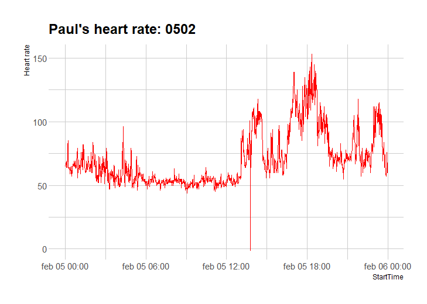

@@include('header.htm')

@@include('blocks/navigation.htm', {"pages" : "active", "blog" : "active"})

@@include('blocks/page-title.htm',{
	"title" : "Admin page",
	"description" : "On this page you will find the preliminary analyses, first results and summary statistics during our research project. This page is only visible for us three, not for the students. Before the study starts I will protect it with log-in credentials. "
})
<!--======================================
=            Featured Article            =
=======================================-->
<section class="section featured-article">
	<div class="container">
		<div class="row">
			<div class="col-md-12">
				<article class="featured">
					<!-- Image -->
					<div class="image">
						<a href="blog-single.html"></a>
					</div>
					<!-- written-content -->
					<div class="content">
						<!-- Post Title -->
						<h2><a href="blog-single.html">First touch with the data</a></h2>
						<!-- Tags -->
						<ul class="list-inline post-tag">
							<li class="list-inline-item">
								
							</li>
							<li class="list-inline-item">
								<a href="#">Paul Stroet</a>
							</li>
							<li class="list-inline-item">
								February 7, 2022
							</li>
						</ul>
						<!-- Post Body -->
						<p>Analysis of heart rate data for 4, 5, and 6 February 2022. </p>
						<a class="btn btn-main-sm" href="blog-single.html">Read more</a>
					</div>
				</article>
			</div>
		</div>
	</div>
</section>